UE Vehicle Builder
Automated conversion of DCC source assets into standardized Unreal Engine vehicle packages, including repeatable setup and validation.
~60 min → ~1 min
Packaging time per vehicle workflow.
Validation / tooling video ↗I design and improve pipelines for teams working across Unreal Engine, DCC tools and large production datasets. My focus is workflow reliability, automation, validation and measurable production impact.
Hands-on garment work in Marvelous Designer / CLO3D, with realtime preparation, materials, character gear and presentation inside 3D production workflows.
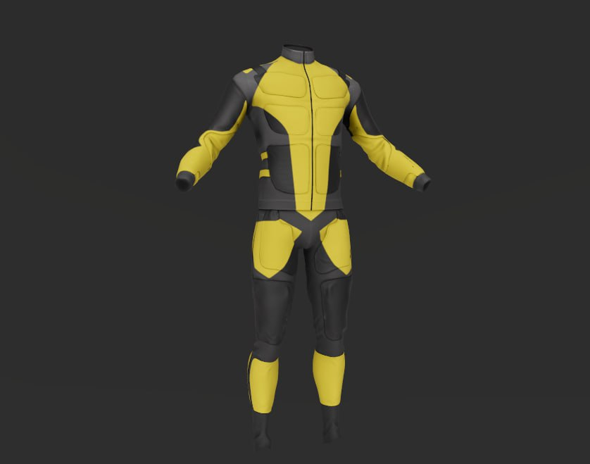
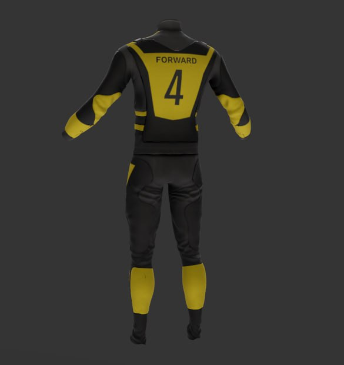
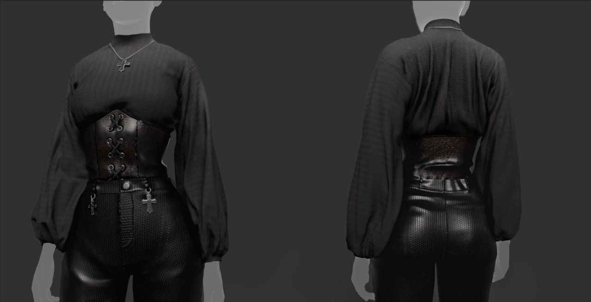
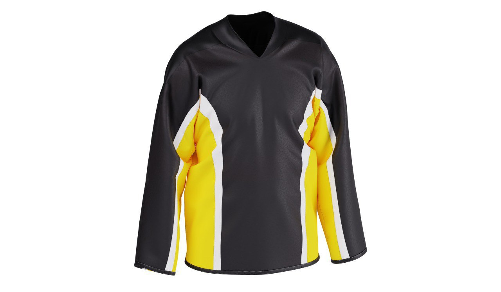
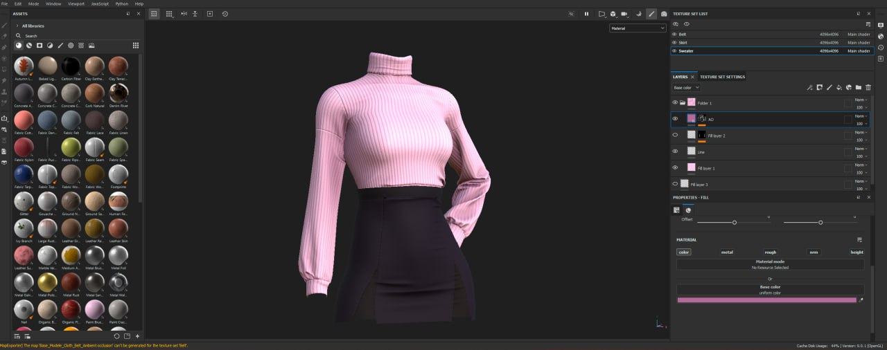
Selected garment work and workflow examples from earlier production and portfolio material.
Selected pipeline work focused on reducing repetitive setup, enforcing standards and making technical workflows easier to operate at team scale.
Automated conversion of DCC source assets into standardized Unreal Engine vehicle packages, including repeatable setup and validation.
Packaging time per vehicle workflow.
Validation / tooling video ↗Production platform for centralized tool distribution, updates, source-data preparation, workflow automation and recovery for a digital-twin team.
Current rollout scale.
Evaluation of AI-assisted modeling workflows through geometry quality, defects, manual rework, production readiness and full-cycle effort.
AI is evaluated as part of the production pipeline, with quality gates and measured constraints.
Realtime character assets, layered clothing and equipment, technical inspection and scene-ready presentation.
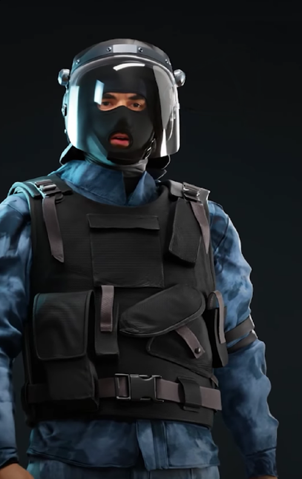
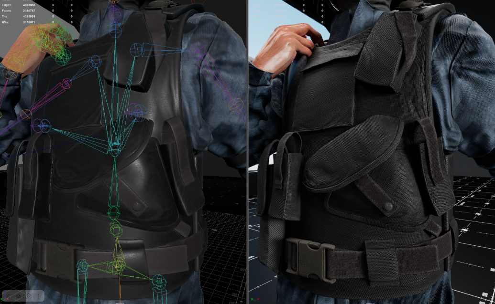
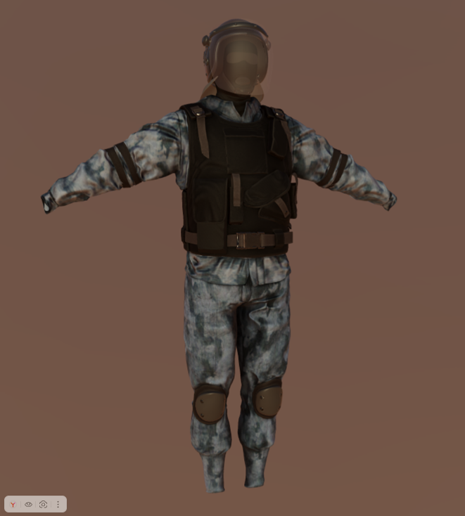
Production work includes editor tooling, validation, profiling, realtime presentation and content optimization.
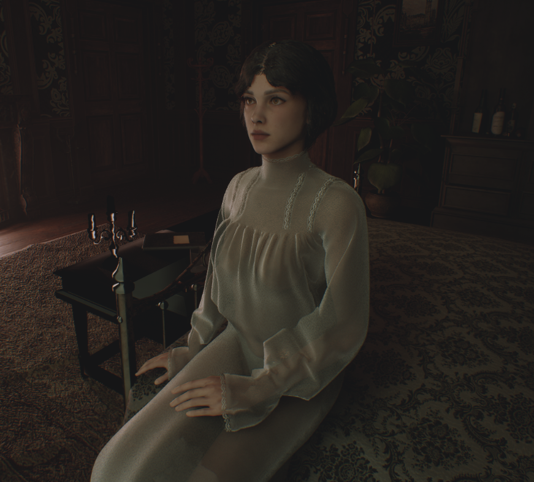
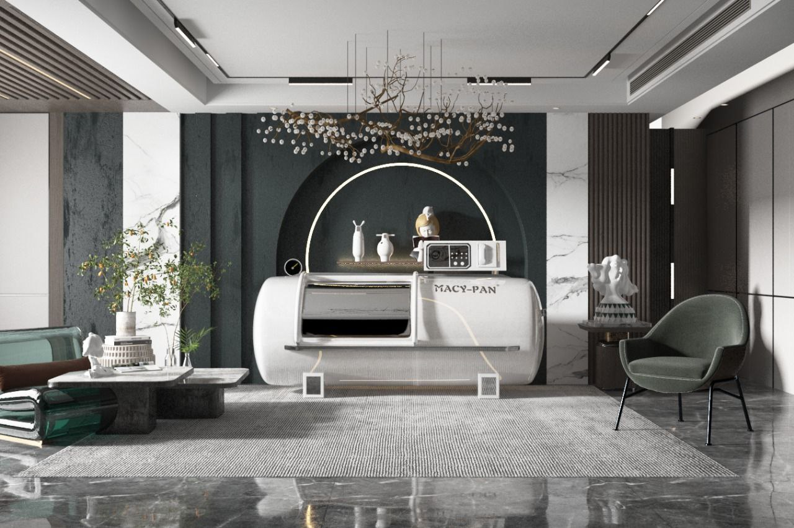
Profiled a scene with Unreal Insights / Trace, identified a UI render-target bottleneck and followed with content-budget optimization.
Defined and enforced requirements around LODs, collision, UVs, materials, folder structure and engine integration.
Current work spans Maya, Blender and Houdini, with tools and process design selected around production needs rather than a single DCC.
Additional visualization work showing material, lighting, composition and realtime presentation experience across different production contexts.
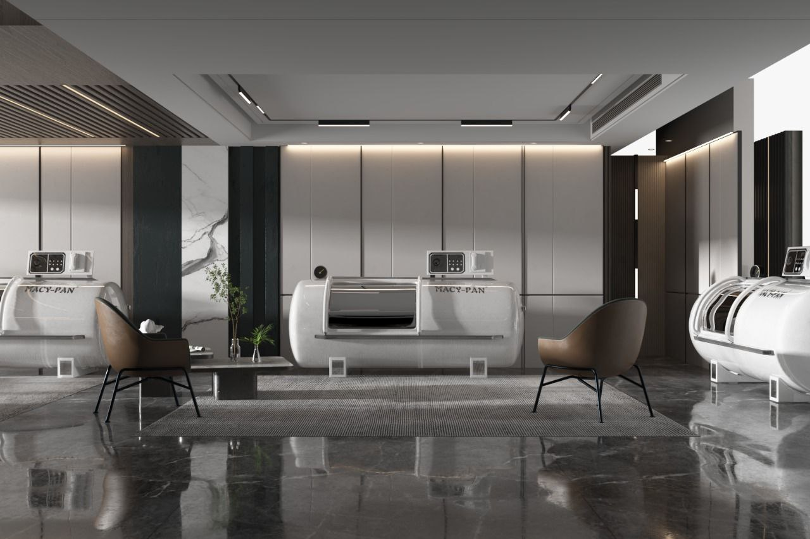
Strongest hands-on production experience is in Unreal Engine, Python/C++, Maya, Blender and Houdini. Garment work includes Marvelous Designer / CLO3D. I also work across adjacent DCC and compositing toolchains as production requirements change.